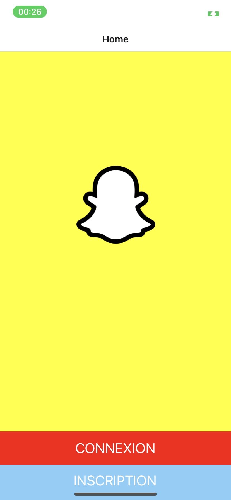

The aim of this personal project was to familiarize myself with JavaScript and React Native. I developed this project with a friend.
We wanted to recreate an application that we use and know, so Snapchat seemed like the right compromise, as it offers many features without being too complex.
The project is still in development, but for now we can take photos and videos, save them on our phone, and connect to a database to store the information.
I really like this project, but I don't think it will ever be completely finished, as I personally prefer to concentrate on other technologies.
